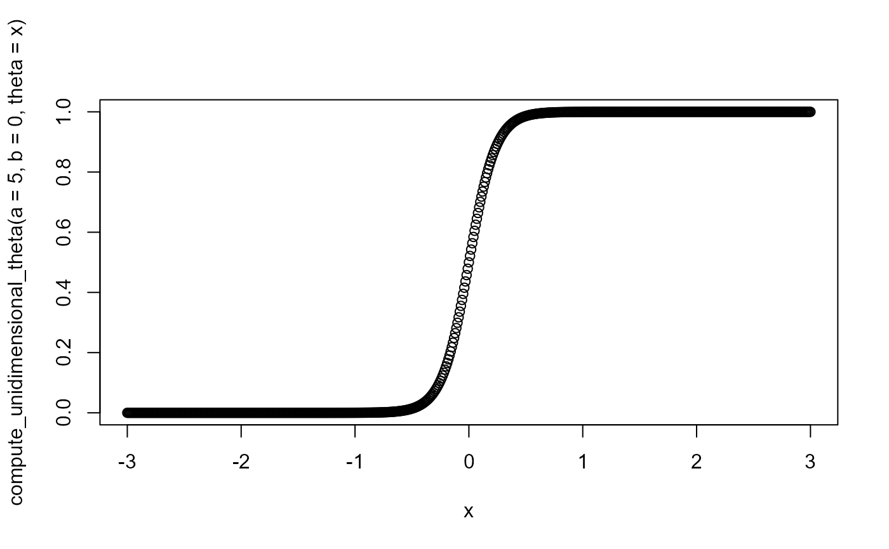
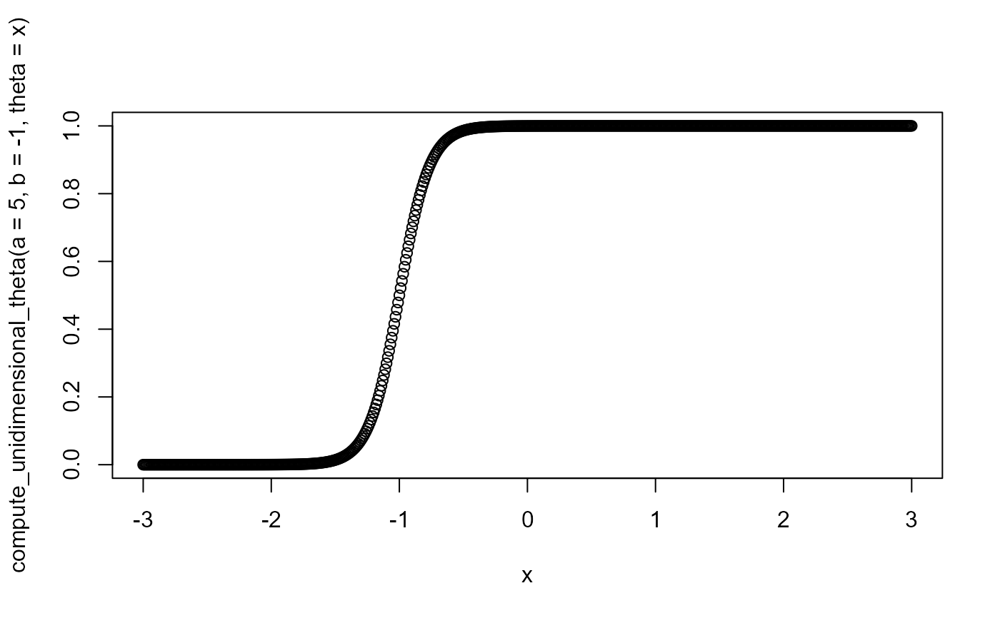
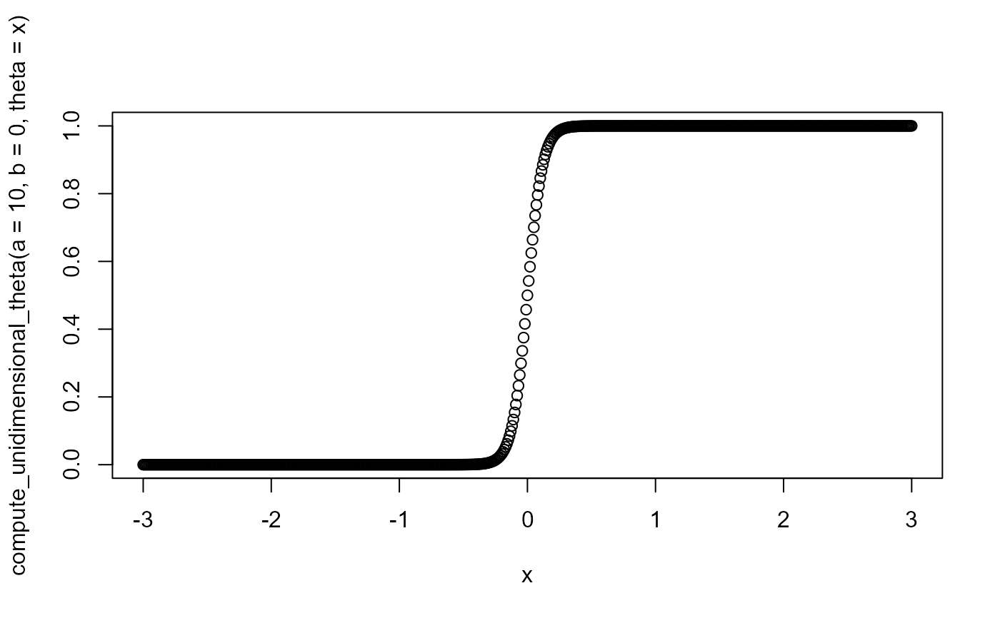
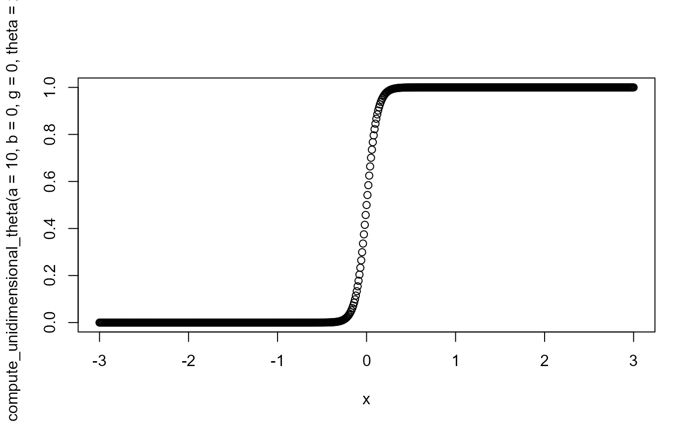
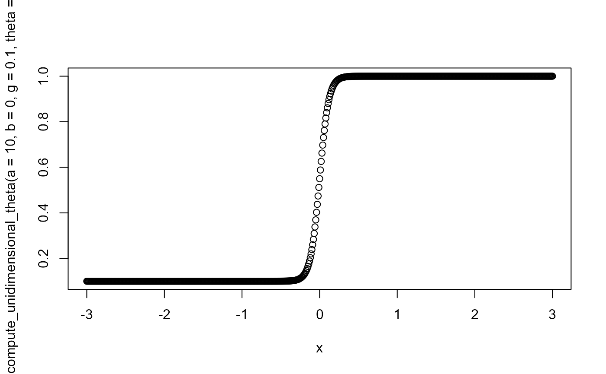
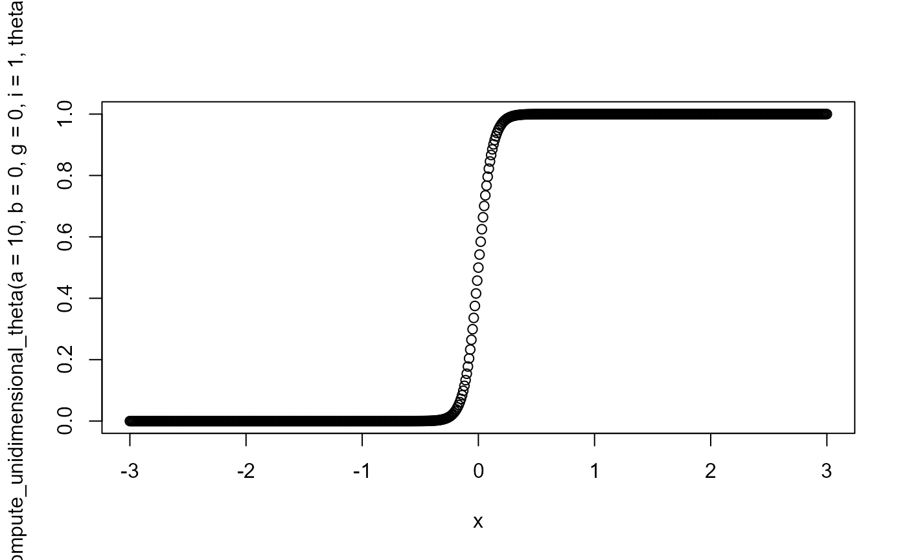
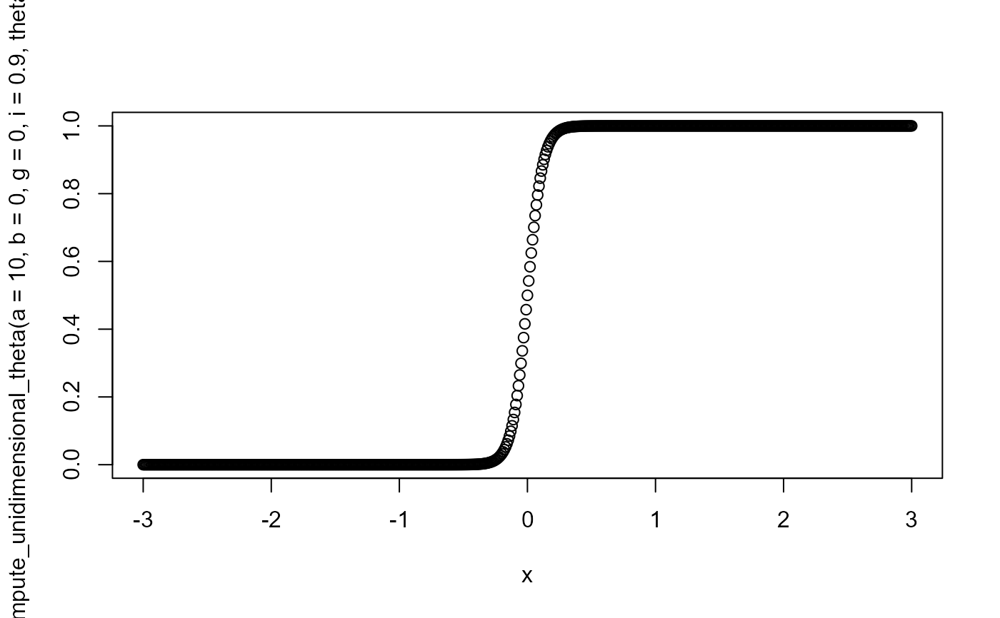

Compute theta for unidimensional models
Note
when scaling constant=1 it has no effect in equation
when innatentiveness=1 and guessing=0 function computes a 2PL score
when innatentiveness=1 and guessing!=0 function computes a 3PL score
when innatentiveness!=1 and guessing!=0 function computes a 4PL score
Examples
compute_unidimensional_theta(a=10,b=0)
#> [1] 0.5
x<-seq(-3,3,by=.01)
plot(compute_unidimensional_theta(a=5,b=0,theta=x),x=x)

plot(compute_unidimensional_theta(a=5,b=-1,theta=x),x=x)

plot(compute_unidimensional_theta(a=5,b=1,theta=x),x=x)
 plot(compute_unidimensional_theta(a=.1,b=0,theta=x),x=x)
plot(compute_unidimensional_theta(a=.1,b=0,theta=x),x=x)
 plot(compute_unidimensional_theta(a=1,b=0,theta=x),x=x)
plot(compute_unidimensional_theta(a=1,b=0,theta=x),x=x)
 plot(compute_unidimensional_theta(a=10,b=0,theta=x),x=x)
plot(compute_unidimensional_theta(a=10,b=0,theta=x),x=x)

plot(compute_unidimensional_theta(a=10,b=0,g=0,theta=x),x=x)

plot(compute_unidimensional_theta(a=10,b=0,g=.1,theta=x),x=x)

plot(compute_unidimensional_theta(a=10,b=0,g=.5,theta=x),x=x)
 plot(compute_unidimensional_theta(a=10,b=0,g=0,i=1,theta=x),x=x)
plot(compute_unidimensional_theta(a=10,b=0,g=0,i=1,theta=x),x=x)

plot(compute_unidimensional_theta(a=10,b=0,g=0,i=.9,theta=x),x=x)

plot(compute_unidimensional_theta(a=10,b=0,g=0,i=.6,theta=x),x=x)